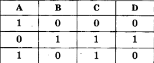
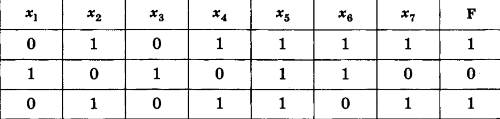
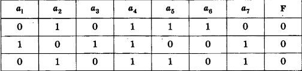

| 1 |

Дан фрагмент таблицы истинности выражения D, каким выражением может быть D?
|
|||
| 1) (A ∨ B) → ¬C | 2) A ∧ B ∧ ¬C | 3) ¬A ∨ B ∨ C | 4) ¬A ∧ B ∧ C | |
| 2 |

Дан фрагмент таблицы истинности выражения F, каким выражением может быть F?
|
|||
| 1)x1 ∧ ¬x2 ∧ x3 ∧ ¬x4 ∧ x5 ∧ x6 ∧ ¬x7 | 2)¬x1 ∨ x2 ∨ ¬x3 ∨ x4 ∨ ¬x5 ∨ ¬x6 ∨ x7 | 3)¬x1 ∧ x2 ∧ ¬x3 ∧ x4 ∧ x5 ∧ x6 ∧ x7 | 4)x1 ∨ ¬x2 ∨ x3 ∨ ¬x4 ∨ ¬x5 ∨ ¬x6 ∨ ¬x7 | |
| 3 | Для какого из приведенных чисел Z логическое условие истинно (Z < 5) → (Z < 3) V ((Z < 2) → (Z> 1))? | |||
| 1)1 | 2)2 | 3)3 | 4)4 | |
| 4 |

Дан фрагмент таблицы истинности выражения F, каким выражением
может быть F?
|
|||
| 1)a1 → (a2 ∧ a3 ∨ a4 ∧ a5 ∨ a6 ∧ a7) | 2)a2 → (a1 ∧ a3 ∨ a4 ∧ a5 ∨ a6 ∧ a7) | 3)a3 → (a1 ∧ a2 ∨ a4 ∧ a5 ∨ a6 ∧ a7) | 4)a4 → (a1 ∧ a2 ∨ a3 ∧ a5 ∨ a6 ∧ a7) | |
| 5 | Какое из приведённых слов удовлетворяет логическому условию: (первая буква согласная → вторая буква согласная) ∧ (последняя буква гласная → предпоследняя буква гласная) | |||
| 1)ИГРА | 2)МАФИЯ | 3)ОЗОН | 4)ТРЕНАЖ | |
| 6 | Какое из приведённых чисел Z удовлеетворяет логическому условию (Z кратно 4 ∨ Z кратно 6) → Z кратно 5? | |||
| 1)12 | 2)7 | 3)6 | 4)4 | |
| 7 | Ниже приведены имена и фамилии четырёх участников соревнований. Укажите участника, чье имя и фамилия НЕ удовлетворяют такому учловию: (первая буква имени согласная → последняя буква имени согласная) (последняя буква фамилии согласная → первая буква фамилии согласная). | |||
| 1)Анна Анненкова | 2)Мария Михайлова | 3)Олег Оролов | 4)Степан Саргсян | |
| 8 | Каково наибольшее целое число Z, при котором ложно высказывание? (8Z - 6 < 75 ) → (Z * (Z - 1)> 65) | |||
| 1)100 | 2)80 | 3)9 | 4)8 | |
| 9 | Сколько различных решений имеет уравнение ¬D ∧ B ∧ ¬E ∧ ¬A ∧ (C ∨ ¬C) = 0 где A, B, C, D, E - логические переменные? | |||
| 1)1 | 2)5 | 3)30 | 4)52 | |
| 10 | Дано логическое выражение: (A → ¬C) (¬B ∧ C ∧ A) ¬D Укажите значения переменных А, В, С, D, при которых логическое выражение ложно. Ответ запишите в виде строки из четырёх двоичных цифр: значений переменных А, В, С и D (именно в таком порядке порядке). Например, для значений А = 0, В = 1, С = 0, D == 1 ответ должен иметь вид 0101? | |||
| 1)1111 | 2)1110 | 3)1101 | 4)0000 | |